1. Surveillance System to Track Individuals Using Gait Biometrics
PhD Project, Manipal University Jaipur, India
Human gait recognition using the model-free approaches can be done through the analysis of moving shape and motion of the subject's body. The benefit of this approach is that the recognition can be performed at large distance with sufficiently low-resolution images. This approach is very simple and intuitive to extract gait signatures from the gait frames.
- Duration : Jan 2018 – Dec 2022
- Technology: Deep Learning, Computer Vision, Biometrics (Gait)
- Application: Surveillance
- Interface: GUI
- Hardware: Jetson Nano
- Dataset: CASIA, TUM, OUISIR

The most interesting research in biometrics is automatic gait recognition when compared to other human unique features. Though there are many approaches to overcome the variations in gait recognition, still there are challenges to recognize a person. Challenges are distinctive gait datasets, degree of stability in identifying, sensing modality, covariates and spoofing effects, and exploring new algorithms. From the developmental perspective, human gait recognition has gained maturity in adopting recent methodologies to provide the high accuracy and the same was analyzed and studied in the view of vision based system. In this paper, the basic knowledge about the human gait is identified and explored. The comparative analysis with the existing techniques of gait recognition were discussed. In this work, the survey of recent deep architecture model on human gait identification, authentication and clinical applications were discussed.
The Gait Recognition System (GRS) is a biometric system that is utilized for security. Because the computational complexity of GRS is so great, a high-end hardware setup is required. It is tough to execute such algorithms on edge devices and if executed on cloud then network connectivity and data security issue arises. Furthermore, changes in an individual’s movement and wearing clothing, and carrying a bag are key covariate variables that affect a system’s performance. Furthermore, with GRS, identification under varied view angles is a significant difficulty. In this, a unique, completely automated, and optimal technique for edge devices for GRS under various covariates is proposed using deep learning as DeepGait. Preprocessing original video frames, creating an optimal deep learning pipeline utilizing the CNN model for feature extraction, reducing additional features, hyper tuning the network for all covariate circumstances, and ultimately subject detection are the key phrases. The extraction of CNN features is a crucial phase to obtain the most functional features. To do this, we carefully pick network settings. We created a network after running the datasets numerous times and attaining the lowest error rate. In the CASIA B dataset, eleven distinct view angles, occlusion in carrying state, and apparel variation are employed in the assessment method. An accuracy of 98.64 percent is reached on the jetson nano. Compared to current state-of-the-art methodologies, the results indicate a considerable increase in accuracy and runtime on edge devices like the Jetson Nano.
Application Interface
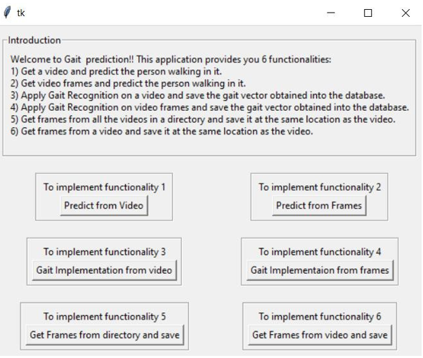Accuracy
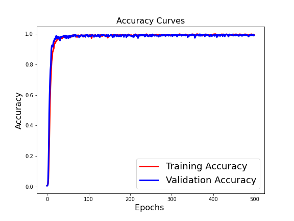Results
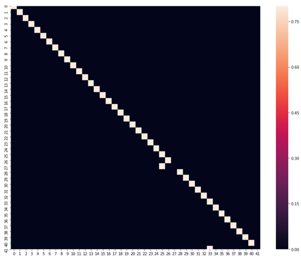2. Face De-Identification Pipeline Based on Physiological & Machine Recognition Experiments Using Deep Learning
Croatian Government funded project with with Prof. Dr. Scientist. Slobodan Ribarić, Zagreb Croatia
We proposed a reversible face de identification pipeline that modifies face geometry and texture. Fourteen parameters for geometrical modification are used. For texture modification fixed face texture template is used.
- Duration : 5 Sept 2016 – 30 Dec 2018
- Technology: Deep Learning, Computer Vision, Biometrics (Face)
- Application: Surveillance, De-Identification
- Hardware: Jetson Nano
- Dataset: Famoud faces

We compiled a set of 30 face images of famous people (7 females and 23 males with ages ranging from 30 to 75) from politics, sports, business and entertainment. The used testing procedure is like the one used for diagnosing of the prosopagnosia a neurological disorder characterized by the inability to recognize human faces. Images of de-identified faces of famous persons are presented to the test subjects with a request to try to recognize them. Obtained answers are recorded for later matching with ground truth answers. The main aim of the performed testing is to evaluate the impact of geometrical and texture modifications on human ability to recognize faces. The evaluation is performed by means of crowdsourcing performed by 150 test subjects (20 females and 130 males). The test subjects were informed that faces in the tests are de-identified faces of famous people. The background (ie context) and biometrical ques like hair and ears, that a user can use for face identification are removed in all tests.
Results
We have investigated impact of various geometrical and texture modifications of face components like cyes, eyebrows, nose and lips on ability of humans and machines to recognize faces. The crowdsourcing and machine face recognition experiments were performed on images of famous people collected from the Internet. The obtained results in both types of experiments showed that face texture has stronger impact on a level of privacy protection then face geometry shape) modifications.
Application Interface
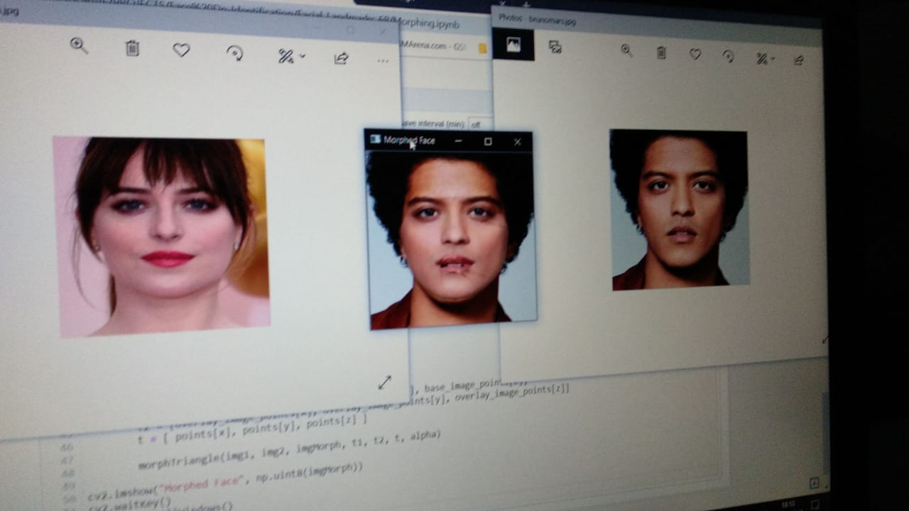face Dataset
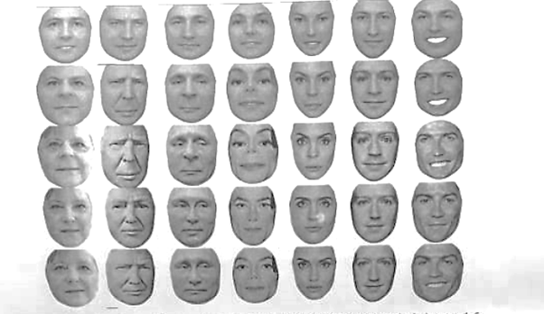3. Classification Of Gait Data Using Machine Learning Techniques To Categorise Human Locomotion
M.Tech Project, VCE Rohtak
Shown the importance of gait recognition in order to detect whether a human GAIT is normal gait or pathological gait.
- Duration : 5 Sept 2014 – 30 June 2016
- Technology: Machine Learning, Computer Vision
- Application: Medical, Early detection
- Hardware: Jetson Nano
- Dataset: Crouch dataset.
Three main approaches in gait classification i.e. back propagation and KNN. After comparing the testing and training results we get better results using back propagation learning technique. The whole work of paper is to describe the classification technique of different type of GAIT into following four categories: Normal, crouch2, crouch3, crouch4 using back propagation and KNN. When the training of data is done then the output of will be either four options i.e. Normal, crouch2, crouch3, crouch4. If the testing data set is tested on the proposed system then the output must be normal GAIT if the classifier classifies it as normal data or the output will be abnormal GAIT data if the classifier classifies it as crouch2, crouch3, crouch4 in any of these three categories. .
Application Interface
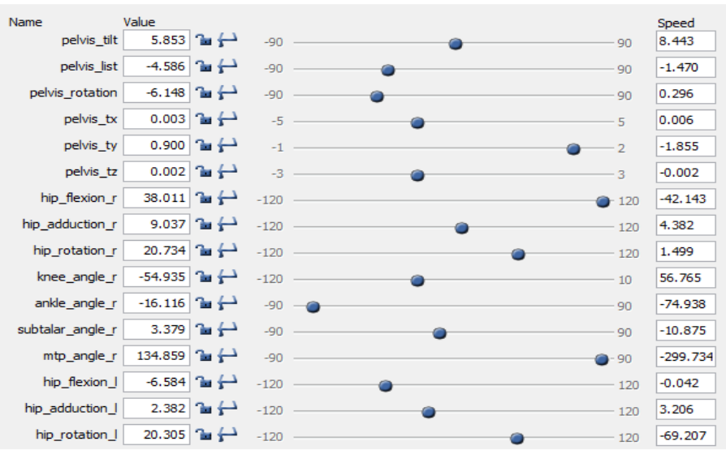Accuracy
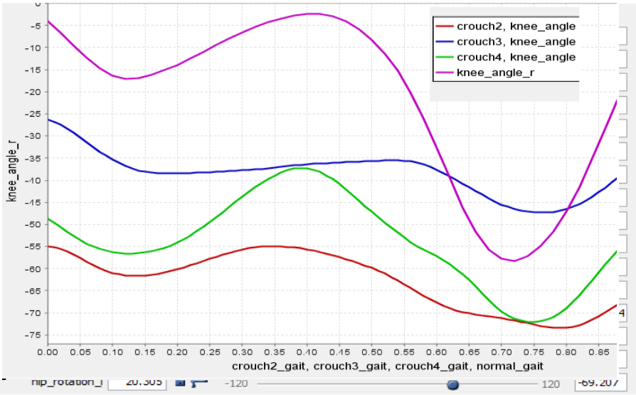Results
So we first select the feature and identify the principal feature then we classify gait data and use different machine learning techniques (K-mean, KNN and Back Propagation) and performance comparison is shown. Experimental results on real time datasets proposed method is better than previous method as far as humanoid locomotion classification is concerned.
4. Low-cost IoT enabled Board Marker using Image Processing
IoT Project, Manipal University Jaipur, India
This project is based on robotics. Robots have been easing human tasks since decades and in addition to the numerous tasks they perform for us, this time its desired that they contribute towards modern education.
- Duration : Jan 2019 – Dec 2020
- Technology: Image Processing, IoT
- Application: Automation, class room teaching
- Interface: GUI - Processing Software version 2.2
- Hardware: Arduino mega, 9V DC supply, Two Stepper Motors, One Servo Motor, Male-Male, Male-Female and Female-Female Jumper Cables, 16 Teeth Pulley Cable, Drawing Board, Drawing Instrument (e.g. Marker), L293D Motor Shield, Heat Sinks, Weights
- Dataset: JPG/PNG and SVG format
The project would be implemented keeping the teaching industry in mind but could also find its applications in areas that require designing. The basic idea of this project is that a robot would be fed a reference drawing, mostly text-based input or a diagram, which it would then replicate on an output area of our choice for example a white board or a notebook. The benefits of such a robot would be that it would save time that would be required to produce a complex and detailed diagram on a white board for teaching purposes and quite obviously be helpful in graphic designing on materials of our choice if implemented and refined further. The system works on a pulley system where an end-effector is manipulated using the pulleys. The application running on the PC is fed with the image which the recognizes the edges of the image and then sends command numbers to the microcontroller. The microcontroller upon receiving the command numbers performs commands associated with the received command numbers. The microcontroller rotates the stepper motor as per the need of the image to be drawn, the servo motor attached at the pen-holder acts as a pen lifting mechanism similar to the action we perform while writing or drawing. The pulley system adds to the maneuverability of the system while cutting down on costs. The system works as per predicted and produces good quality drawings on the drawing pad.
Application Interface
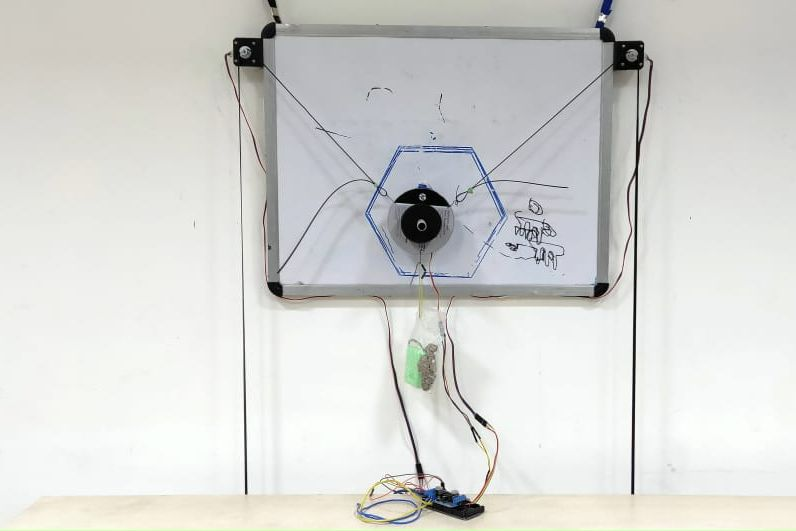Accuracy
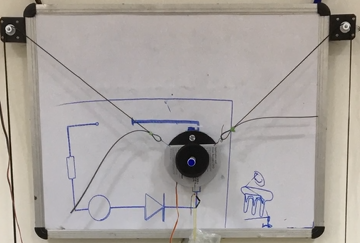Results
With the 9V of DC supply, the stepper motors run smoothly with no jitters. The circuit doesn’t experience overheating at this power supply. The systems performance is heavily dependent on the power supply. The pen-lift actions are fluid and precise and the system responds quickly to the drawing commands somewhere between 0.5-1 second.
5. IoT Enabled Mechanical Chess based on Artificial Intelligence
IoT Project, Manipal University Jaipur, India
Automated AI chess board is a physical chess board which lets the player play against an AI the chess board is powered by raspberry Pi.
- Duration : Jan 2018 – Dec 2019
- Technology: Artificial Intelligence, Robotics, IoT
- Application: Playing chess on a real chess board against machine
- Interface: Raspberry Pi, L298n Motor drivers
- Hardware: Flexible Shaft Coupling, Stainless Steel Lead Screw Rod with Nut, Pillow Block Bearing, box/wood/table, servo motor, raspberry pi, arduino, Chess board, Magnets, Electromagnets, Spools, Belts
- Dataset: Stockfish
The Field of Artificial Intelligence is very vast but the prime goal of researchers and engineers is to enable the computer to think like a human. And a game of chess require a lot of thinking and logic, for a long time we have been playing the game of chess to exercise our brains and entertain ourselves at the same time. And we all love the feel of an original chess board. It would be really nice to play the game of chess against an Physical Board. Using the core XY motion of two motors we are enabling an electromagnet to span a whole chess board and the electromagnet will be responsible to slide the pieces across the whole board. Using two Nema 17 motors and two lead screw mechanism for our X and Y axises both powered by L2N8 motor drivers and a relay module to control the electromagnet the chess pieces with sufficiently strong magnets attached to the bottom will slide across the board. Using the Min-Max spanning tree providing an initial score to each player the goal of our AI is to minimize the score of the opposing player and trying to maintain its own score. User will make a move and depending on the move made by user our AI will generate a move tree containing possible moves. Every piece of the board has a rank and a score which is equal to the sum of all the ranks of alive pieces of that particular color will be assigned at each step to the color. Each node of the move tree contains the score corresponding to the move, treating scores as weights of the tree we apply Min-Max search to make the best possible move.
Application Interface
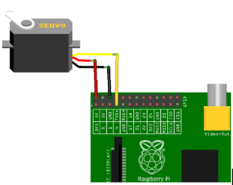Results

Results
Tests were performed with certain parameters in mind Speed of AI: The AI performed above expectations in terms of speed. X motion track and motor: It ran fast and delivered accurately but made a lot of noise, indicating that it was not perfectly smooth. Y motion track and motor: It was smoother than the X track but was slightly slower due to the extra weight and added friction from the optical axis shafts. Electromagnet: It was stronger than expected and due to unevenness of board occasionally lost pieces, this was corrected by reducing the height of the mount on which it rested and increasing the voltage to give more power. We used a new approach to core XY motion which efficiently handles large weight while still maintaining the speed. The AI developed for our project is fast and very reliable for low end embedded systems.
6. Optimized Navigation using Deep Learning Technique for Automatic Guided Vehicle
IoT Project, Manipal University Jaipur, India
This study tackled the mentioned problems with a straightforward and cost-effective solution, using end to end learning and replacing the numerous sensors with a camera and commandeering just the forward, backward, left, and right controls.
- Duration : June 2018 – Dec 2019
- Technology: Deep Learning, IoT, Computer Vision
- Application: Smart car, Autonomous, Detect Stop Signs and Traffic Lights and Avoid Front Collision.
- Software: Raspbian OS, 2. Python, OpenCV Libraries
- Hardware: RC Car, Raspberry Pi, Ultrasonic sensor, PI Camera
- Dataset: Stimulator for autonomous car by Udacity generated training data
Autonomous driving has passed the point of being called the biggest step, as the smart car revolution is already taking shape around the world. Self-driving cars are relevant if not prevalent and the biggest obstacles to reach the mass adoption are customer acceptance, cost, infrastructure and the reliance on several onerous algorithms that include perception, lane marking detection, path planning and variation in pathways. In this research, authors have used most popular method of deep learning i.e. Convolution Neural Network (CNN) to train the collected data on the VGG16 model. Later these have optimized directly by the proposed system with cropping each unnecessary image and mapping pixels from a single front-facing camera to direct steering instructions. It has been observed from the experimental work that proposed model has given better result than the existing work i.e. increase in the accuracy from 88% (Udacity training dataset) to 98% (proposed). This model is suitable for industrial use and robust in real time scenarios therefore can be applied in modern industrialized systems.
Application Interface
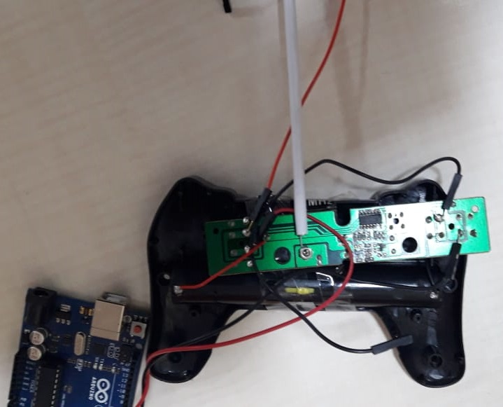Results
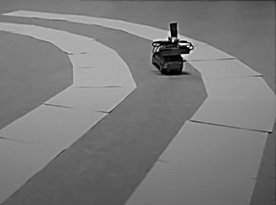Accuracy
After rigorous test runs on tracks apart from which the car is trained on, it is concluded that the car can function competently in a controlled environment. The neural network is also working fittingly and gave 98% results.
7. IoT based Smart Assistance Spoon for Parkinson Patients
IoT Project, Manipal University Jaipur, India
Our primary objective is to make the Robotic arm, having 4 servo motors to interface with the development of a microcontroller based Robotic arm.
- Duration : Jan 2017 – Dec 2018
- Technology: Artificial Intelligence, Robotics, IoT
- Application: Feed the patient with no efforts needed
- Interface: Android App
- Hardware: Raspberry Pi, Servo Motors, Stepper motor, Robotic arm, Breadboard, Jumper Cables, Other modules like Bluetooth module, WIFI module
- Dataset: Patient height
The arm control by robotics is very popular in the world of robotics. The essential part of the robotic arm is a programmable micro controller-based brick capable of driving basically four servos to form an anthropomorphic structure. Our primary objective is to make the Robotic arm, having 4 servo motors to interface with the development of a microcontroller based Robotic arm. It provides more interfaces to the outside world and has larger memory to store many programs. The technology for assisting people who are functionally challenged has improved over the recent decades. A group that suffer from this ailment are people with Parkinson’s disease. Parkinson’s disease (PD) is a neurological degenerative disease that causes uncontrollable shaking and makes it difficult for the affected person to eat. There is no cure for PD, but there is technology and potential for new technology that can help people who carry the disease with their daily lives. The machine will be of great use to perform repetitive tasks of picking and placing of small edibles upto 500 grams in one serving. It can be used to do small assembly work effectively due to its great added accuracy for placement purpose, which has further extended scope of our project.
Application Interface
Results
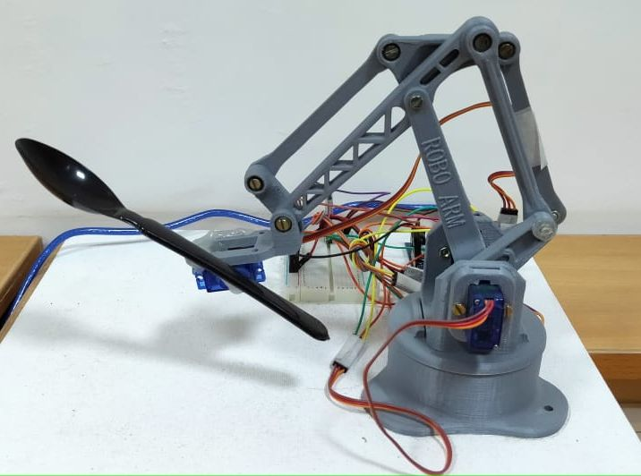Accuracy
The robotic arm model was successfully implemented which was able to pick up food from the tray and direct it towards the mouth of the user. The Bluetooth app for connecting to the arm, controlling and terminating the process was also developed.
8. Unmanned Aerial Vehicle for Surveillance
IoT Project, Manipal University Jaipur, India
Drone is an all-purpose medical toolkit that can be automatically flown to any emergency situation and used to guide citizens to make non-technical lifesaving procedures.
- Duration : Jan 2020 – Present
- Technology: Artificial Intelligence, Robotics, IoT
- Application: Surveillance
- Interface: Controlling quadcopter with mobile application
- Hardware: Quadcopter, Battery, Ardupilot, ESCs(electronic speed controllers), Gyroscope, wifi module, Installing camera with quadcopter, Inserting microphone in drone, Interfacing different Sensors
- Dataset: Environment
When a medical emergency takes place in natural flood, the response time can make all the difference between a life saved and a life lost. Unfortunately, ambulances can’t reach in the place due to over water flooding, in which time a cardiac arrest victim may have already succumbed to a lack of oxygen to the brain. Drone is an all-purpose medical toolkit that can be automatically flown to any emergency situation and used to guide citizens to make non-technical lifesaving procedures. With our drone we dramatically increase this survival rate. The incorporation of a two-way, video supported, communication channel in the drone between operators and the first responders will improve first care. Successful drone usage by lay-persons is currently at 20%. With personalized instructions and communication on the drone, this can be increased to 90%. In short, the drone helps to save lives by extending existing emergency infrastructure with a network of fast and compressed video broadcasting channel capable of bringing emergency supplies and establishing communication between dedicated source and destination.
Results
In this project, we are building a drone which can provide live video coverage for monitoring purpose. Additionally, GPS module can also be used. GPS module will give us the location of the drone. Then, after attaching telemetry device, waypoints can be given to drone so that it can automatically go to the required location and come back to the same place from where it was launched.
Application Interface
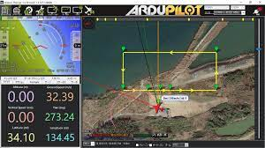Hardware Interface
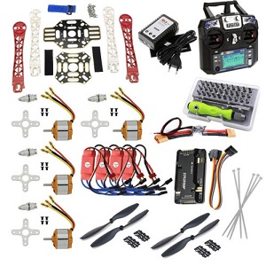9. Smartphone-based Sleep Staging using 1-Channel EEG
IoT Project, Manipal University Jaipur, India
Drone is an all-purpose medical toolkit that can be automatically flown to any emergency situation and used to guide citizens to make non-technical lifesaving procedures.
- Duration : Jan 2020 – Present
- Technology: Artificial Intelligence, Robotics, IoT
- Application: Surveillance
- Interface: Controlling quadcopter with mobile application
- Hardware: Quadcopter, Battery, Ardupilot, ESCs(electronic speed controllers), Gyroscope, wifi module, Installing camera with quadcopter, Inserting microphone in drone, Interfacing different Sensors
- Dataset: Environment
When a medical emergency takes place in natural flood, the response time can make all the difference between a life saved and a life lost. Unfortunately, ambulances can’t reach in the place due to over water flooding, in which time a cardiac arrest victim may have already succumbed to a lack of oxygen to the brain. Drone is an all-purpose medical toolkit that can be automatically flown to any emergency situation and used to guide citizens to make non-technical lifesaving procedures. With our drone we dramatically increase this survival rate. The incorporation of a two-way, video supported, communication channel in the drone between operators and the first responders will improve first care. Successful drone usage by lay-persons is currently at 20%. With personalized instructions and communication on the drone, this can be increased to 90%. In short, the drone helps to save lives by extending existing emergency infrastructure with a network of fast and compressed video broadcasting channel capable of bringing emergency supplies and establishing communication between dedicated source and destination.
Results
In this project, we are building a drone which can provide live video coverage for monitoring purpose. Additionally, GPS module can also be used. GPS module will give us the location of the drone. Then, after attaching telemetry device, waypoints can be given to drone so that it can automatically go to the required location and come back to the same place from where it was launched.
Application Interface
Hardware Interface
10. Smartphone-based Sleep Staging using 1-Channel EEG
IoT Project, Manipal University Jaipur, India
Drone is an all-purpose medical toolkit that can be automatically flown to any emergency situation and used to guide citizens to make non-technical lifesaving procedures.
- Duration : Jan 2020 – Present
- Technology: Artificial Intelligence, Robotics, IoT
- Application: Surveillance
- Interface: Controlling quadcopter with mobile application
- Hardware: Quadcopter, Battery, Ardupilot, ESCs(electronic speed controllers), Gyroscope, wifi module, Installing camera with quadcopter, Inserting microphone in drone, Interfacing different Sensors
- Dataset: Environment
When a medical emergency takes place in natural flood, the response time can make all the difference between a life saved and a life lost. Unfortunately, ambulances can’t reach in the place due to over water flooding, in which time a cardiac arrest victim may have already succumbed to a lack of oxygen to the brain. Drone is an all-purpose medical toolkit that can be automatically flown to any emergency situation and used to guide citizens to make non-technical lifesaving procedures. With our drone we dramatically increase this survival rate. The incorporation of a two-way, video supported, communication channel in the drone between operators and the first responders will improve first care. Successful drone usage by lay-persons is currently at 20%. With personalized instructions and communication on the drone, this can be increased to 90%. In short, the drone helps to save lives by extending existing emergency infrastructure with a network of fast and compressed video broadcasting channel capable of bringing emergency supplies and establishing communication between dedicated source and destination.
Results
In this project, we are building a drone which can provide live video coverage for monitoring purpose. Additionally, GPS module can also be used. GPS module will give us the location of the drone. Then, after attaching telemetry device, waypoints can be given to drone so that it can automatically go to the required location and come back to the same place from where it was launched.